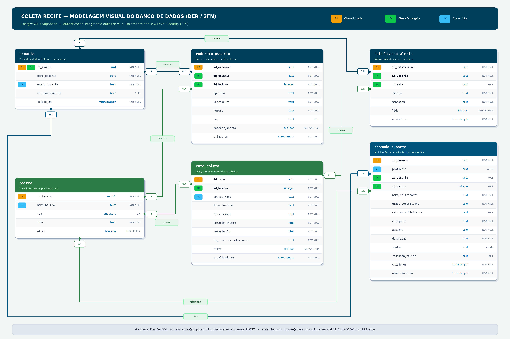

MODELAGEM DO BANCO DE DADOS
Diagrama Entidade-Relacionamento (DER — 3FN)
Baixar diagrama (PNG)

Resumo das Entidades e Segurança (RLS)
| Tabela | Chaves | Finalidade | Política RLS |
|---|---|---|---|
usuario |
PK/FK: id_usuarioUK: email_usuario |
Dados cadastrais do cidadão sincronizados via trigger ao_criar_conta com auth.users. |
SELECT e UPDATE (nome, celular) restritos a auth.uid() = id_usuario. |
bairro |
PK: id_bairroUK: nome_bairro |
Bairros do Recife classificados por RPA (1 a 6) e zona geográfica. | SELECT público para registros com ativo = true. |
rota_coleta |
PK: id_rotaFK: id_bairroUK: codigo_rota |
Itinerários, dias da semana e faixas horárias de coleta domiciliar, seletiva e de volumosos. | SELECT público para rotas com ativa = true. |
endereco_usuario |
PK: id_enderecoFK: id_usuario, id_bairro |
Endereços monitorados pelo morador para envio de alertas antecipados. | CRUD completo restrito ao titular (auth.uid() = id_usuario). |
notificacao_alerta |
PK: id_notificacaoFK: id_usuario, id_rota |
Histórico de notificações enviadas antes da chegada do caminhão. | SELECT e UPDATE (lida) apenas para o destinatário. |
chamado_suporte |
PK: id_chamadoUK: protocoloFK: id_usuario, id_bairro |
Solicitações e relatos enviados na página Suporte com protocolo automático CR-AAAA-00001. |
Gravação via RPC abrir_chamado_suporte; leitura pelo titular autenticado. |